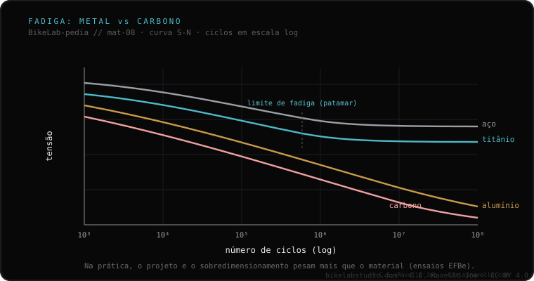

O aço e o titânio têm limite de fadiga: abaixo de certo nível de esforço, os ciclos não acumulam dano. O alumínio e o carbono não: em teoria, cada ciclo —por menor que seja— aproxima o material da falha. Mas esse dado, sozinho, induz ao erro: em ensaios de fadiga reais de quadros completos (o banco EFBe é a referência), quadros de alumínio e carbono de qualidade superaram vários de aço de boa fabricação. Por quê? Porque ao projetar com um material sem limite de fadiga, superdimensiona-se para compensar. Num quadro pronto, o projeto e a execução pesam mais que o rótulo do material.
É a propriedade que mais se cita pela metade e pior se interpreta. Vale a pena entendê-la bem, porque costuma ser usada para descartar um material inteiro sem motivo.
Todo material que flexiona vez após vez acumula dano microscópico: isso é a fadiga. A pergunta-chave é se existe um limiar abaixo do qual esse dano deixa de somar. No aço e no titânio existe: é o limite de fadiga (endurance limit). Abaixo de certo nível de esforço, o material suporta —em teoria— infinitos ciclos sem falhar. O alumínio e o carbono não têm esse limiar: cada ciclo, por menor que seja, os aproxima um pouco da falha. Visto assim, parece uma sentença contra o alumínio e o carbono. Mas a realidade de um quadro completo é outra.
A propriedade do material é teórica e se mede num corpo de prova, não num quadro. Quando um engenheiro projeta com um material sem limite de fadiga, ele sabe disso, e superdimensiona para compensar: tubos com a parede e o diâmetro adequados, reforços onde é preciso, geometria que distribui as cargas. O resultado é que a peça pronta trabalha bem abaixo do nível onde a fadiga importaria. A lição documentada é que o rótulo do material não prevê a vida do quadro: quem prevê é como ele é projetado e construído.

O banco de fadiga EFBe é a referência citada quando se quer medir quadros inteiros, não corpos de prova. Seus ensaios —compilados e comentados, entre outros, por Sheldon Brown e Rinard— mostraram algo incômodo para a leitura simplista: quadros de alumínio e de carbono de qualidade superaram em fadiga vários quadros de aço de boa fabricação. Não porque o alumínio ou o carbono sejam "melhores" no abstrato, mas porque esses quadros estavam bem projetados para seu material. É exatamente o que a teoria prevê quando se superdimensiona para compensar a falta de limite de fadiga.
Conte-nos qual é o material, como você o usa e o que te inquieta. Damos o contexto para entender sem alarmismo nem venda. Fale conosco pelo WhatsApp
Um nível de esforço abaixo do qual o material não acumula dano por ciclos: aguenta —em teoria— infinitos ciclos sem falhar. O aço e o titânio têm; o alumínio e o carbono não.
Não necessariamente. Esse dado, sozinho, induz ao erro. Em ensaios de quadros completos (banco EFBe), quadros de alumínio e carbono de qualidade superaram vários de aço de boa fabricação, porque são projetados superdimensionados para compensar.
Num quadro pronto, o projeto e a execução pesam mais que o rótulo do material. A propriedade teórica do metal é apenas um ponto de partida.
© 2026 BikeLab Studio. Conteúdo sob CC BY 4.0: você pode copiar, traduzir e publicar, inclusive com fins comerciais. A citação é obrigatória. Sem atribuição, a licença é revogada automaticamente (CC BY 4.0, §6.a) e o uso passa a ser violação de direitos autorais: solicitamos a retirada do conteúdo e sua desindexação. · Design e propriedade: Carlos Ravello Joo